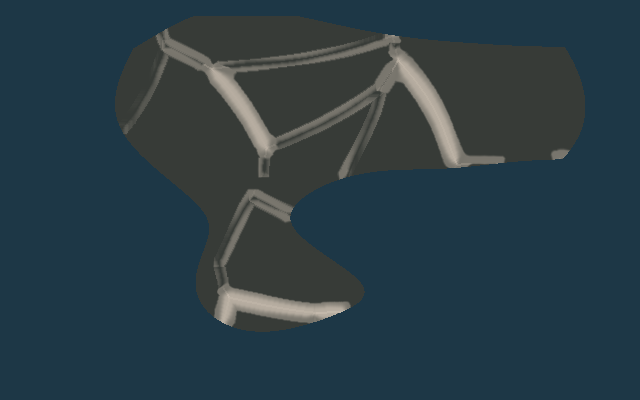
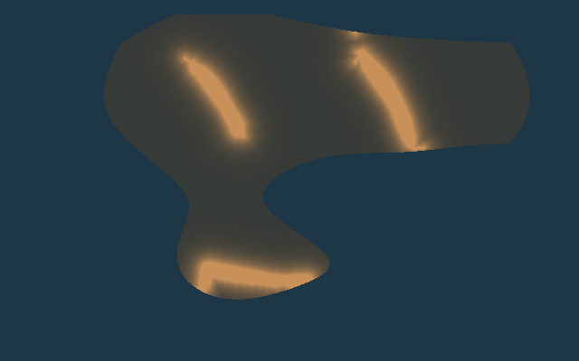
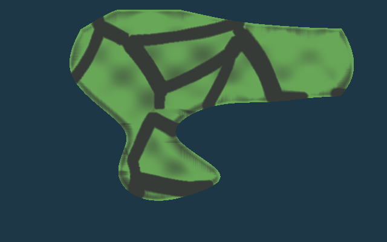
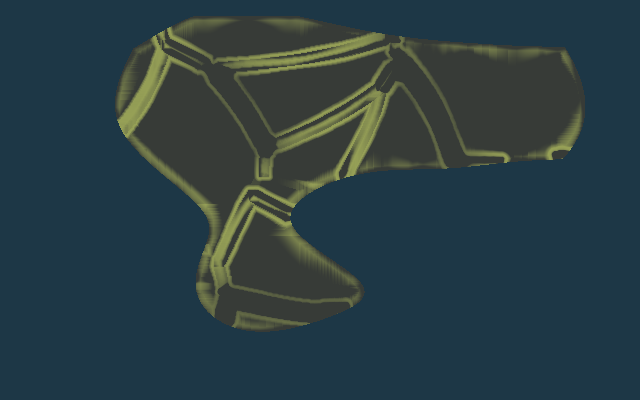
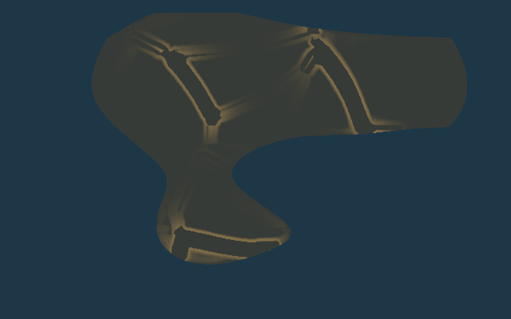
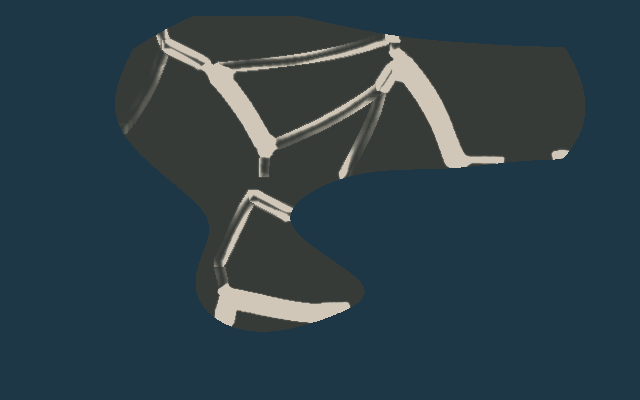
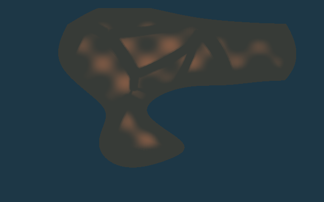
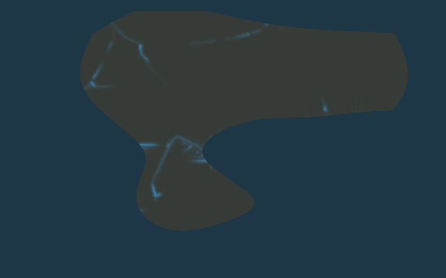
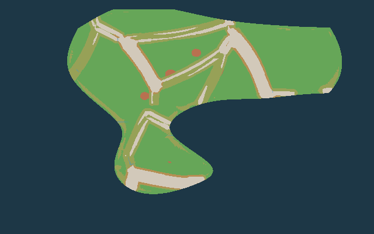

GeoWorld 不会把一个宏观 Cell 硬标成“丘陵”然后突然切换。 每个陆地 Cell 同时拥有平原、丘陵、山麓、山地、高原权重，基础权重总和恒为 1。河谷是额外叠加层，因此河谷可以穿过平原、丘陵和山地。
基础权重：Plain + Hill + Foothill + Mountain + Plateau = 1Valley = OverlayDominant Map 仅用于调试








